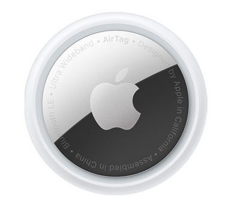
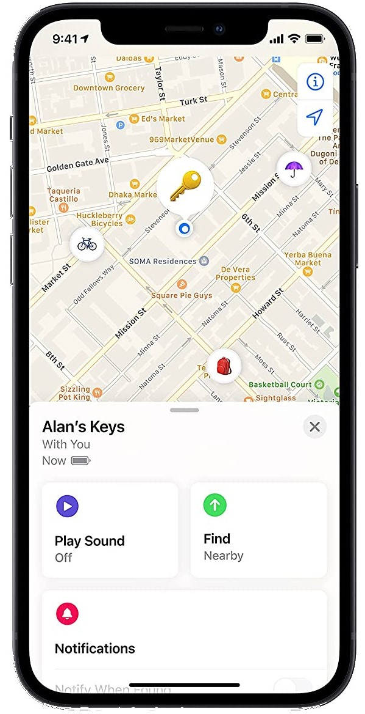

Perdez l’habitude de tout perdre.
Les AirTags sont le moyen tout trouvé de tout retrouver. Pour les utiliser, c’est très simple : accrochez-en un à vos clés, glissez-en un autre dans votre sac, et n’y pensez plus. Vous pouvez pister vos objets dans l’app Localiser. Avec les AirTags, plus rien ne vous échappe.
Un son. Et c’est trouvé.
Paniquer quand on égare son portefeuille ? Avec l’AirTag, c’est de l’histoire ancienne. Rendez-vous dans le nouvel onglet Objets de l’app Localiser et faites sonner l’AirTag correspondant – ou dites « Dis Siri, où est mon portefeuille ? ». Le haut-parleur intégré de l’AirTag fait alors retentir un bip. S’il se cache à proximité, sous un coussin ou dans la pièce voisine, vous n’avez plus qu’à vous laisser guider par le son.
